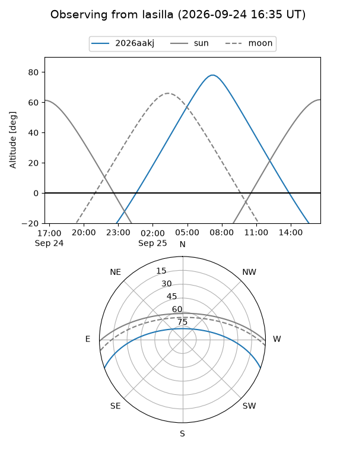
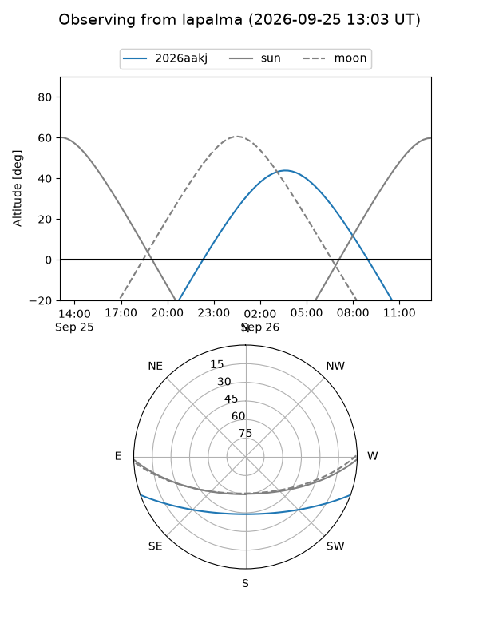
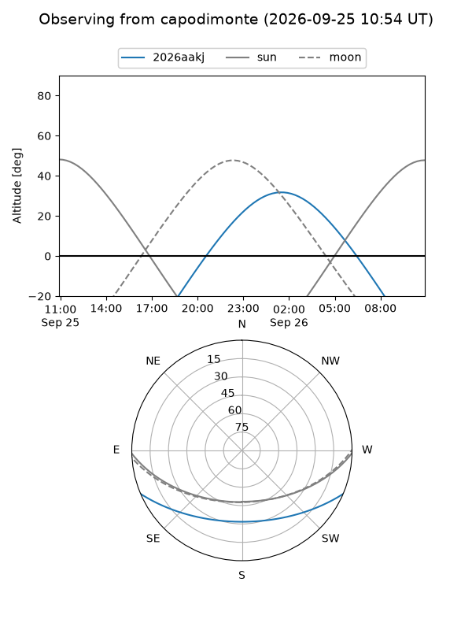
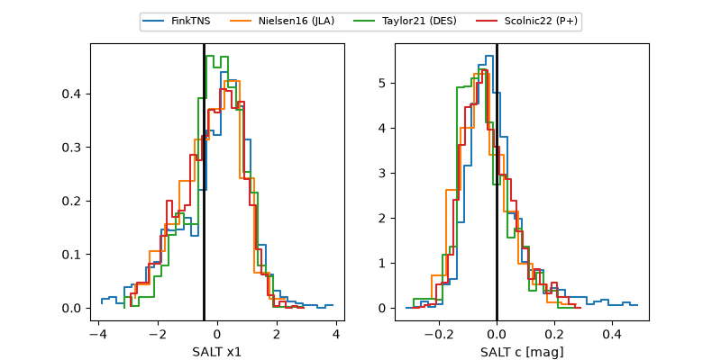

2026aakj
Target 2026aakj at 2026-09-25 17:28
Aliases and brokers:
FINK-ZTF: ztf.fink-portal.org/ZTF26abrzqmi
Lasair-ZTF: lasair-ztf.lsst.ac.uk/objects/ZTF26abrzqmi
ALeRCE-ZTF: alerce.online/object/ZTF26abrzqmi
YSE-PZ: ziggy.ucolick.org/yse/transient_detail/2026aakj
TNS name: wis-tns.org/object/2026aakj
Direct TNS query: direct search
alt names
ZTF26abrzqmi (ztf,fink_ztf)
2026aakj (tns,yse)
Coordinates:
equatorial (ra, dec) = 41.2729,-17.47269
equatorial (HMS+DMS) = 02:45:05.50,-17:28:21.69
galactic (l, b) = (198.6748,-62.07603)
Flags:
TNS type: nan
peak dt: +14.4
Photometry:
last atlasc=19.40, atlaso=19.51, ztfg=20.06, ztfr=19.59
2 atlasc, 1 atlaso, 6 ztfg, 6 ztfr detections
Lightcurve
Visibility



Additional plots
